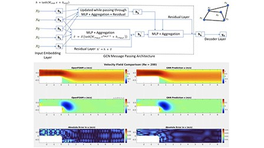
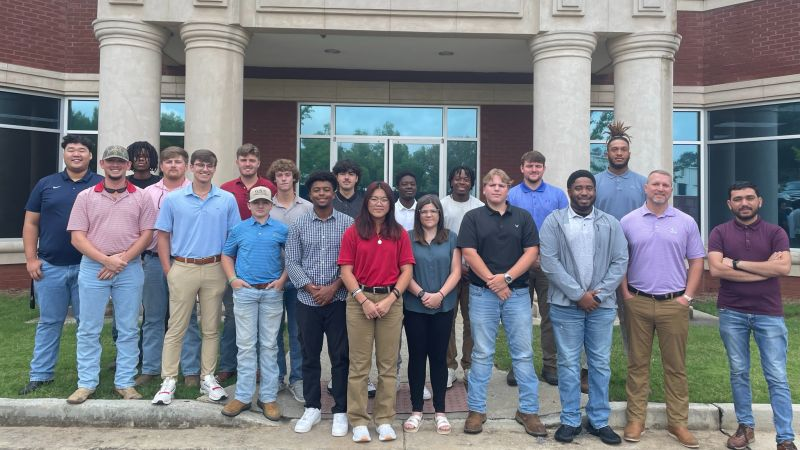

Selected updates on publications, invited talks, conference participation, and award-supported research
dissemination.
Published in International Journal of Thermal Sciences (NIJ-supported research stream)
Published computational study on gypsum-board thermal response under varied heat flux conditions,
extending fire-forensics modeling outcomes from prior grant-supported work.
Delivered invited spotlight talk at RAISE AI Bridge Summit (TAMU)
Presented a use-inspired spotlight on graph neural networks for CFD, focusing on domain challenges and
geometry-aware scientific ML opportunities.
Published graph-based modeling work in Physics of Fluids

Published "A Novel Residual Multilayer Perceptron-based Graph Convolutional Network for Modeling Heat
Transfer and Fluid Flow."
Received Top Eagle Award and Best Graduate Student Award
Recognized at Georgia Southern Student Research Symposium for first-position graduate research poster work.
Awarded GSO Research/Travel Grant for ASME IMECE 2023

Received competitive support from Georgia Southern Graduate Student Organization to present hydrogen
storage and Li-ion thermal runaway modeling research at IMECE.
Completed MS in Mechanical Engineering (GPA 4.0/4.0)
Finalized thesis work on coupled heat and mass transfer in metal-hydride hydrogen storage systems and
transitioned to PhD research at Texas A&M University.